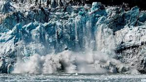

PUNTO DE INFLEXIÓN: En climatología, un punto de inflexión es un punto donde los cambios en el clima global pasan de un estado estable hacia otro también estable.[aclaración requerida] Después de que el punto de inflexión ha sido pasado, ocurre una transición a un nuevo estado. El evento de inflexión puede ser irreversible, comparable con vino derramado de una copa de pie, y si bien el vaso se pone de pie, el vino no vuelve a él. El calentamiento global procede por cambiar la composición de gases en la atmósfera por la super emisión de gases de invernadero, tales como dióxido de carbono y metano. A medida que avanza el calentamiento, provoca cambios en el ambiente que a su vez pueden provocar otros cambios. Por ejemplo, el calentamiento puede comenzar a fundir la capa de hielo de Groenlandia. En algún nivel de aumento de la temperatura, la fusión de la totalidad de la capa de hielo sería inevitable, a pesar de que la fusión completa puede no ocurrir por miles de años. Por lo tanto, un punto de inflexión se puede pasar sin consecuencias obvias. Tampoco el uso de punto de inflexión implica necesariamente una aceleración del proceso de calentamiento. James Hansen cree que ese punto ya se ha alcanzado con los niveles de dióxido de carbono en la actualidad, con 392 ppm. Además, ha sugerido proyecciones potenciales de cambio climático fuera de control en la Tierra, con condiciones para crear condiciones más parecidas a Venus, como en su libro Las tormentas de mis nietos.
EFECTOS
| EFECTOS CLIMÁTICOS | ||||||||
|---|---|---|---|---|---|---|---|---|
| FENÓMENOS METEOROLÓGICOS | SUBIDA DEL NIVEL DEL MAR | |||||||
Se espera que los cambios en el clima regional incluyan un mayor calentamiento en tierra, en su mayoría en las latitudes altas del norte. |
La subida del nivel del mar es un fenómeno que se ha observado desde comienzos del siglo XX. El ascenso de 1900 a 2016, ha sido de 16-21 cm. |
|||||||
La extinción masiva del Holoceno, también conocida como la sexta extinción masiva o la extinción del Antropoceno, es el evento de extinción masiva en el actual período Holoceno, resultado de la actividad humana. Estas extinciones afectan a muchas familias de plantas y animales, desde el mamut hasta el dodo, incluyendo incontables especies que continúan desapareciendo cada año. . |
Se considera una extinción masiva pues el número de desapariciones es comparable a las otras grandes extinciones masivas que han marcado el pasado geológico de la Tierra. | |||||||
"No tendremos una sociedad si destruímos el medio ambiente" |
||||||||